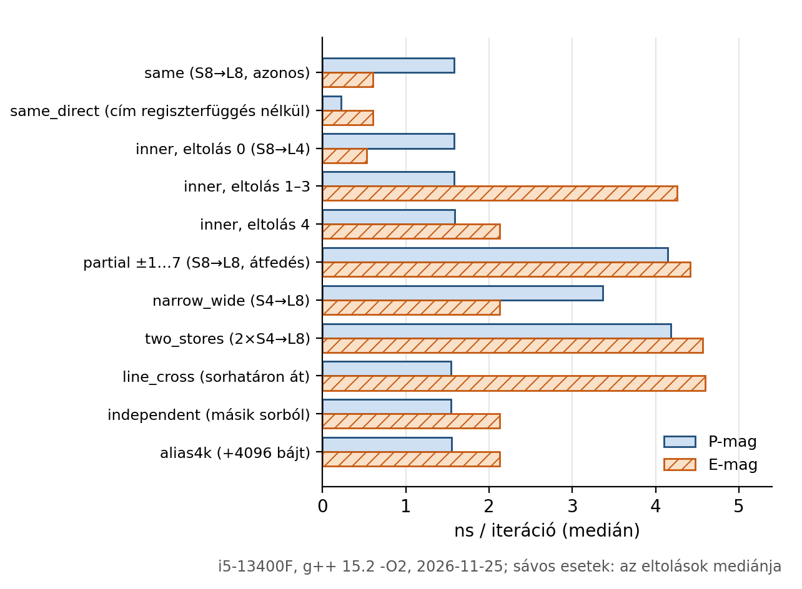

Egy rövid ciklus minden körben kiír egy 8 bájtos értéket, majd
visszaolvas 8 bájtot, és a következő kör az olvasott értékből számol. Ha
a betöltés pontosan a most írt címről olvas, az i5-13400F P-magján egy
kör 1,58 ns. Ha egyetlen bájttal eltolva olvas, 4,03 ns; ha mínusz
eggyel, 4,26 ns (2026-11-25, bench_stlf, mediánok).
Ugyanannyi utasítás, mégis 2,6-szoros idő.
A magyarázat a processzor egy kevéssé látható szerkezetében van: a tárolások nem azonnal kerülnek a gyorsítótárba, hanem egy sorban várnak, és a betöltéseknek először ebben a sorban kell keresniük. Egy sorrenden kívül végrehajtó gépen ráadásul az sem tudható előre, hogy egy betöltés függ-e egy korábbi tárolástól. Ez az alfejezet a memórián át futó függőségek kezelését tanítja meg.
A regiszterfüggőségeket az átnevezés a dekódoláskor feloldja, mert a
regiszternevek az utasításban vannak. A memóriacím viszont
számított érték: a sw t0, 0(a1) és a
lw t2, 8(a3) akkor érint azonos bájtot, ha a1
= a3 + 8, és ezt csak a címek kiszámítása után tudjuk. Mire
a tárolás címe előáll, a mögötte álló betöltés talán régen lefutott
volna.
A hardver két sorban tartja számon a memóriaműveleteket, programsorrendben: a load-sor (load queue, LQ) és a store-sor (store queue, SQ). Képzeljünk el egy postát. A feladott levelek (tárolások) a pult mögötti kosárban várnak, mielőtt kimennek a világba (a cache-be). Aki a legfrissebb levélre kíváncsi, először a kosárba néz bele. Ha egy olvasó már a régi változatot vitte el, mielőtt a friss levél címzése kiderült volna, vissza kell hívni, és újra kell kezdenie.
Az ábrán egy spekulatív futás: a 2. ciklusban az L1 betöltés a cache-ből olvas, mert a régebbi S1 tárolás címe még ismeretlen; a 6. ciklusban kiderül, hogy ugyanaz a cím, ezért a betöltést (és a nála fiatalabb betöltéseket) meg kell ismételni.
Definíció. A store-sor minden tárolás címét és adatát tárolja kiadástól addig, amíg az a cache-be nem ír. A már véglegesült, de még ki nem írt bejegyzések alkotják a tárolópuffert (store buffer).
A Regiszterátnevezés, ROB és spekuláció szerint egy tárolás csak commit után módosíthatja a memóriát, mert addig a spekuláció visszavonhatja. Commit után a bejegyzés nem törölhető rögtön: a cache-írás (esetleg cache-hiba) időbe telik, a ROB fejét pedig nem akarjuk emiatt feltartani. A tárolópuffer ezért a commit után sorban (FIFO) írja ki a bejegyzéseket.
A tárolás két részből áll, amelyek külön időben lehetnek készen: a cím (címszámítás) és az adat.
Ha egy betöltés egy még ki nem írt tárolás adatát kéri, a cache tartalma elavult. A hardver a betöltés címét összeveti a nála régebbi bejegyzésekével, és a legfiatalabb átfedő tárolásból veszi az adatot. Ez a store-to-load továbbítás (store-to-load forwarding). A tipikus feltételek:
| Eset | Mi történik |
|---|---|
| a tárolás tartalmazza a betöltés minden bájtját, az adat kész | továbbítás, nagyjából cache-találat idejével |
| tartalmazza, de az adat még nincs kész | a betöltés vár |
| részleges átfedés (a bájtok egy része máshonnan jönne) | a betöltés vár, amíg a tárolás a cache-be nem ír |
| nincs átfedő régebbi tárolás | olvasás a cache-ből |
A tartalmazás a szokásos szükséges feltétel, de nem elégséges: a konkrét processzorok további megkötéseket tesznek (igazítás, eltolás, méret), amelyek mikroarchitektúrától függnek. Ezt a mérésben látni fogjuk.
Mi legyen, ha a betöltés címe ismert, de egy régebbi tárolásé még nem?
Definíció. A függőségbecslő (memory dependence predictor) megjegyzi, mely betöltés-utasítás melyik tárolás-utasítással ütközött már, és a következő alkalommal csak azokra a tárolásokra vár. A klasszikus változat neve store set: minden betöltéshez azoknak a tárolásoknak a halmaza tartozik, amelyekkel ütközött.
Továbbvitt eredmény. A spekulatív betöltés a címfüggetlenségre tett jóslat: ha téves, a hardver a rendezési hibát észleli, és a betöltést újrafuttatja, így az architekturális eredmény mindig helyes – de a közben végrehajtott (akár elavult adatot olvasó) utasítások mikroarchitekturális nyomot hagyhatnak. Erre tér vissza a Spectre és Meltdown.
Egy magon belül a továbbítás miatt a program mindig a saját legutóbbi írását látja. A többi mag azonban csak a cache-ben (a koherens memóriában) látja az írásokat, ami a tárolópuffer miatt késik. Ezért egy mag egy fiatalabb betöltése a memóriát előbb olvashatja, mint ahogy egy régebbi, más címre menő tárolása a többiek számára láthatóvá válik. Ez a tárolás–betöltés átrendeződés az x86 memóriamodelljének, a TSO-nak az alapja.
Továbbvitt eredmény. A tárolópuffer a commit után, FIFO sorrendben ír a cache-be, a betöltés pedig megelőzheti a más címre tartó régebbi tárolást, és a saját magja írását a pufferből látja előbb, mint a többi mag: ez a TSO mikroarchitekturális forrása. Ezt használja a Szekvenciális konzisztencia és litmus-tesztek és a TSO: az x86 memóriamodellje.
A modell (archkit.ooo.LSQ): minden művelet már a
sorokban van, a cache-olvasás és a továbbítás 4 ciklus, a tárolás a
commit után 3 ciklussal ír a cache-be, ciklusonként egy commit és egy
betöltés-indítás, az újrafuttatás 5 ciklus büntetés. A
t_addr az a ciklus, amelytől a cím ismert.
| # | Művelet | Cím, méret | t_addr |
|---|---|---|---|
| S1 | tárolás, érték 7 | 0x100, 4 B |
6 |
| L1 | betöltés | 0x100, 4 B |
2 |
| L2 | betöltés | 0x200, 4 B |
2 |
| S2 | tárolás, 0x11223344 |
0x300, 4 B |
3 |
| L3 | betöltés | 0x300, 8 B |
4 |
Kezdetben M[0x100] = 1, M[0x200] = 2.
Spekulatív politika mellett:
0x100. L1 átfed
vele és a cache-ből kapta az adatot: rendezési hiba. L1
és a már elindult, nála fiatalabb L2 törlődik, legkorábban a 11.-ben
indulhatnak újra.0x300-tól, de S2 csak
4 bájtot ír: részleges átfedés. Várnia kell, amíg S2 a cache-be ír
(20.), 23-ra kész, a 24.-ben véglegesül.A konzervatív politikával L1 a 6. ciklusban indul, és S1-ből továbbítással kapja a 7-et (6–9), L2 a 7.-ben; a futás 19 ciklus. Itt tehát a spekuláció rontott: 24 ciklus. A becslő második futásában L1 megvárja S1-et, L2 viszont már a 2. ciklusban indul; az összidő mégis 19, mert a vége L3 várakozásán múlik.
import sys; sys.path.insert(0, "code")
from archkit import ooo, perf
A, B, C = 0x100, 0x200, 0x300
muveletek = [ooo.MemOp("store", A, 4, 7, t_addr=6, pc="S1"),
ooo.MemOp("load", A, 4, t_addr=2, pc="L1"),
ooo.MemOp("load", B, 4, t_addr=2, pc="L2"),
ooo.MemOp("store", C, 4, 0x11223344, t_addr=3, pc="S2"),
ooo.MemOp("load", C, 8, t_addr=4, pc="L3")]
memoria = {A: 1, B: 2}
r = ooo.LSQ(muveletek, "speculative", memoria).run()
print(r.table())
helyes, _ = ooo.sequential_memory(muveletek, memoria)
print("rendezési hibák:", r.violations, " értékek helyesek:", r.values == helyes)# művelet indul kész commit cache-írás forrás újra
1 S1 [0x100]:4 6 6 7 10
2 L1 [0x100]:4 11 14 15 – cache 1
3 L2 [0x200]:4 12 15 16 – cache 1
4 S2 [0x300]:4 3 3 17 20
5 L3 [0x300]:8 20 23 24 – cache
rendezési hibák: [(6, 1, 0)] értékek helyesek: TrueA helyességet a sorrendi végrehajtás referenciája ellenőrzi: bármelyik politika ugyanazokat az értékeket adja, csak az időzítés tér el. A politikák különbsége akkor látszik, ha a tárolások címe késik, és a betöltések főleg függetlenek. Négy tárolás–betöltés pár, a cache 20 ciklusos, a harmadik betöltés a saját párja tárolásának címét olvassa:
def parok(utkozik):
ops = []
for k in range(4):
cim = 0x100 + 16 * k
ops.append(ooo.MemOp("store", cim, 4, k + 1, t_addr=10 + 2 * k, pc="S"))
ide = cim if (k == 2 and utkozik) else 0x800 + 16 * k
ops.append(ooo.MemOp("load", ide, 4, t_addr=2,
pc="La" if (k == 2 and utkozik) else "L"))
return ops
print("politika ütközés nélkül egy ütközéssel")
becslo = ooo.StoreSets()
esetek = [("konzervatív", "conservative", None), ("spekulatív", "speculative", None),
("becslő, 1. futás", "predict", becslo), ("becslő, 2. futás", "predict", becslo)]
for nev, pol, tab in esetek:
t = [ooo.LSQ(parok(u), pol, load_lat=20, predictor=tab).run().cycles for u in (False, True)]
print(f"{nev:<19} {t[0]:>10} {t[1]:>14}")
print("megtanult halmaz:", becslo.sets)politika ütközés nélkül egy ütközéssel
konzervatív 38 38
spekulatív 30 40
becslő, 1. futás 30 40
becslő, 2. futás 30 30
megtanult halmaz: {'La': {'S'}}Ütközés nélkül a spekuláció 38 helyett 30 ciklust ad. Egyetlen valódi függőséggel a sima spekuláció (40) még a konzervatívnál is rosszabb, a becslő viszont a második futásban visszahozza a 30 ciklust: csak a megtanult betöltés vár.
A bench_stlf ciklusmagja (a „same” eset, az
objdump -d -M intel kimenete; g++ 15.2,
-O2):
mov rcx,rax # rcx = x
and rcx,0x0 # 0, de x-től függ
mov QWORD PTR [rdi],rax # tárolás
add rcx,rsi # eltolás
mov rcx,QWORD PTR [rdi+rcx*1] # betöltés: a címe x-től függ
lea rax,[rcx+0x1] # következő x
dec rdx
jne 6Az and és az add azért kell, hogy a
betöltés címe függjön az előző körtől, és a körök láncot alkossanak. A
same_direct változat ezt a függést elhagyja: ott a betöltés
címe egyszerűen [rdi].
meta, rows = perf.read_bench_csv("figures/data/ca040-tovabbitas.csv")
print(meta["cpu"], meta["date"][:10])
from statistics import median
def ido(mag, eset):
return median(r["median_ns_per_iter"] for r in rows
if r["core"] == mag and r["case"] == eset)
print("eset P ns E ns")
for eset in ("same", "same_direct", "inner", "partial", "narrow_wide", "two_stores",
"line_cross", "independent", "alias4k"):
print(f"{eset:<13} {ido('P', eset):5.2f} {ido('E', eset):5.2f}")13th Gen Intel(R) Core(TM) i5-13400F 2026-11-25
eset P ns E ns
same 1.58 0.61
same_direct 0.22 0.61
inner 1.58 4.26
partial 4.15 4.41
narrow_wide 3.36 2.13
two_stores 4.19 4.57
line_cross 1.55 4.60
independent 1.54 2.13
alias4k 1.55 2.13
Amit a mérés mutat (az inner sor a táblázatban az öt
eltolás mediánja, a részletek az ábrán):
inner,
bármely eltolással) és a same annyiba kerül, mint a
független betöltés (independent, kb. 7 ciklus a becsült 4,5
GHz-en): a sikeres továbbítás itt nagyjából egy L1-találat. A részleges
átfedés (partial) és a két 4 bájtos tárolásból olvasó 8
bájtos betöltés (two_stores) 2,6-szor lassabb: a betöltés a
cache-írásra vár.same_direct: kb. 1 ciklus körönként.
Feltehetően a mag a címfüggés híján a tárolt értéket közvetlenül adja
tovább (memóriaátnevezés, memory renaming; ezen a magon nem
ellenőriztük, ellenőrizendő).inner csak 0
és 4 bájtos eltolásnál gyors, 1–3 bájtnál nem, a sorhatáron átnyúló pár
(line_cross) lassú. Meglepő, hogy a same
gyorsabb a független betöltésnél, és a narrow_wide nem
lassabb nála; ezekre ebből a mérésből nem tudunk magyarázatot adni
(ellenőrizendő).alias4k, azonos alsó 12
címbit): ezen a gépen ebben a programban nem látszik büntetés.A tanulság programozóknak: ha egy értéket szélesebb vagy eltolt hozzáféréssel olvasunk vissza, mint ahogy írtuk (például bájtonkénti írás után egész szó olvasása), a továbbítás elmaradhat, és az ár mikroarchitektúránként más.
A load/store sor lapján:
0x40 címre
még a sorban van. Melyik betöltés kaphat továbbítást: 4 bájt
0x44-ről; 4 bájt 0x3e-ről; 8 bájt
0x40-ről; 1 bájt 0x47-ről?archkit.ooo.LSQ
modellel vesd össze: négy iterációban (a) egy 8 bájtos tárolás, majd 8
bájtos betöltés ugyanonnan; (b) két 4 bájtos tárolás, majd 8 bájtos
betöltés. Miért tér el a két ciklusszám?code/bench/bench_stlf.cpp programot
(make -C code/bench), futtasd a saját gépeden, és vesd
össze az inner és a partial eseteket. Mit kell
a jegyzőkönyvbe írnod, hogy az eredmény értelmezhető legyen?A memóriacímek számított értékek, ezért a memórián átfutó függőség dekódoláskor nem látszik. A load/store queue programsorrendben tartja a hozzáféréseket: a tárolás commit után, a tárolópufferből kerül a cache-be, a betöltés pedig a legfiatalabb átfedő tárolásból kap továbbítást, ha az minden bájtját tartalmazza; részleges átfedésnél várnia kell (a P-magon mérve kb. 12 ciklus többlet). A spekulatív betöltés a cím ismerete előtt olvas, ütközésnél rendezési hibát és újrafuttatást okoz; a függőségbecslő a tipikus ütközéseket megtanulja. A tárolópuffer FIFO sorrendben ír, a betöltés megelőzheti a más címre tartó régebbi tárolást, a saját mag pedig előbb látja a saját írását: ez a TSO mikroarchitekturális forrása. A spekulatív betöltés eredménye architekturálisan mindig helyes, de a közben végrehajtott utasítások mikroarchitekturális nyomot hagyhatnak.
1. feladat. Továbbítás: 0x44 (a 4–7.
bájt benne van), a teljes 8 bájt 0x40-ről, és
0x47 egyetlen bájtja. A 0x3e-ről olvasó
betöltés két bájtja a tárolás előtti címen van: részleges átfedés,
várnia kell. A modell ugyanezt adja:
alap = [ooo.MemOp("store", 0x40, 8, 0x0807060504030201, pc="S")]
for cim, meret in ((0x44, 4), (0x3e, 4), (0x40, 8), (0x47, 1)):
x = ooo.LSQ(alap + [ooo.MemOp("load", cim, meret, t_addr=2, pc="L")]).run()
print(f"{cim:#x} {meret} B: forrás {x.rows[1]['source']:<5} indul {x.rows[1]['start']}"
f" érték {x.values[1]:#x}")0x44 4 B: forrás S indul 2 érték 0x8070605
0x3e 4 B: forrás cache indul 5 érték 0x2010000
0x40 8 B: forrás S indul 2 érték 0x807060504030201
0x47 1 B: forrás S indul 2 érték 0x82. feladat. Mert az L3 8 bájtot kér, az S2 csak 4-et szolgáltat: a hiányzó 4 bájt a cache-ben van, a két forrást a hardver (a modellben és tipikusan a valóságban is) nem illeszti össze. Meg kell várnia, hogy S2 a cache-be írjon: commit a 17., írás a 20. ciklusban.
3. feladat. A P-magon a partial
mediánja 4,15 ns, az independent 1,54 ns; a különbség 2,6
ns, 4,5 GHz-en kb. 12 ciklus. (Az órajel becsült érték, ezért ez
nagyságrendi becslés.)
4. feladat. A spekuláció akkor éri meg, ha a függetlenek nyert ideje nagyobb, mint a ritka ütközések ára. Ha a betöltések hányada ténylegesen függő, betöltésenként a várható veszteség kb. , a várható nyereség , ahol a megtakarított várakozás. A konzervatív a jobb, ha , azaz : gyakori, drága ütközés és kevés megtakarítható idő mellett. A becslő mindkét esetben a jobbik viselkedést közelíti.
5. feladat.
def kor(ket_tarolas):
ops = []
for k in range(4):
cim = 0x100 + 8 * k
if ket_tarolas:
ops += [ooo.MemOp("store", cim, 4, k, pc="S1"),
ooo.MemOp("store", cim + 4, 4, k + 1, pc="S2")]
else:
ops.append(ooo.MemOp("store", cim, 8, k | (k + 1) << 32, pc="S"))
ops.append(ooo.MemOp("load", cim, 8, t_addr=2, pc="L"))
return ops
for ket in (False, True):
x = ooo.LSQ(kor(ket)).run()
forras = [s["source"] for s in x.rows if s["kind"] == "load"]
print(f"{'2×4 B' if ket else '1×8 B'}: {x.cycles:>2} ciklus, források: {forras}")1×8 B: 14 ciklus, források: ['S', 'S', 'S', 'S']
2×4 B: 37 ciklus, források: ['cache', 'cache', 'cache', 'cache']Egy 8 bájtos tárolásnál minden betöltés a sorból kap adatot, a futás
14 ciklus. Két 4 bájtos tárolásnál egyik sem tartalmazza a teljes 8
bájtot, minden betöltés megvárja a cache-írást, és a futás 37 ciklus. A
P-magon mért two_stores eset ugyanezt a mintát mutatja.
6. feladat. A jegyzőkönyvben legyen benne a
processzor típusa, a mag (P vagy E, rögzített CPU-szám), a fordító és a
kapcsolók, a frekvenciaszabályozó, az ismétlésszám, a medián és a
szóródás, valamint a gép terheltsége. Az inner és a
partial eseteket eltolásonként vesd össze; ha az idők nem
válnak szét két csoportra, vizsgáld meg az assemblyt, és ne feltételezd
a tankönyvi szabályt.